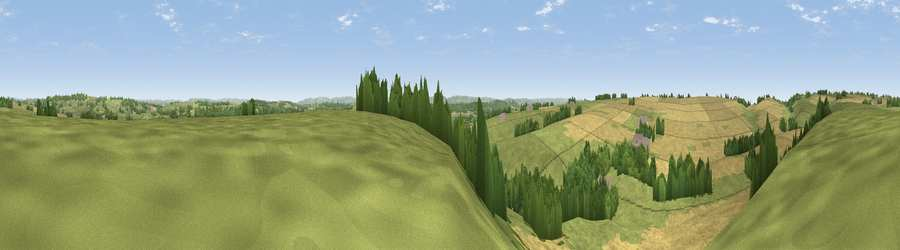

Viewpoint near Poyntington
#21251 in England · top 45% of its area beats it · near Poyntington · open accessWhere it is
The exact computed spot (ST 65475 20325). Click the marker for map links.
Public access: this spot lies on mapped open-access land (CRoW Act 2000) — you may roam here on foot. Computed from Natural England's CRoW access layer and OpenStreetMap rights of way — not the legal definitive map. Always verify locally.
The view, rendered

A 360° render of this exact spot computed from the terrain model, tree cover and land cover — summer colours, afternoon light, calibrated against photographs of famous viewpoints. Real trees, hedges and buildings will differ in detail.
The panorama
Grey silhouette: terrain skyline in each direction (720 bearings, Earth curvature and refraction included). Dashed green: skyline with trees (+15 m) and buildings (+8 m) as obstacles. Blue strip: how far the ground is visible on each bearing.
Where the view opens
Wedge length = distance to the farthest visible ground on that bearing (vegetation-aware). Rings at 10, 25 and 50 km.
What fills the view
45% grassland · 42% cropland · 13% woodland ·
Angular shares of the visible panorama (visual magnitude), not map area. Landscape diversity 0.44 (0–1 Shannon).
Key numbers
More beautiful places nearby
The staircase of upgrades: each row has a higher view potential than everything closer. Driving times are estimates from straight-line distance, calibrated against real road routing — check an actual route before setting out.
| Place | Direction | Drive | Score |
|---|---|---|---|
| Round Hill | WSW · 3 km | ~8 min | 70.4 |
| The Beacon | NW · 4 km | ~9 min | 75.8 |
| Viewpoint near Lamyatt | N · 16 km | ~28 min | 77.8 |
| Viewpoint near Hewish | WSW · 27 km | ~43 min | 78.5 |
| Viewpoint near Nettlecombe | SSW · 28 km | ~44 min | 79.3 |
| Viewpoint near Askerswell | SSW · 28 km | ~45 min | 81.7 |
| Lewesdon Hill | SW · 29 km | ~46 min | 83.3 |
| The Knoll | SSW · 35 km | ~53 min | 91.0 |
50.98129, -2.49318 · source: screening · position refined by local search. Computed location — check access rights before visiting.